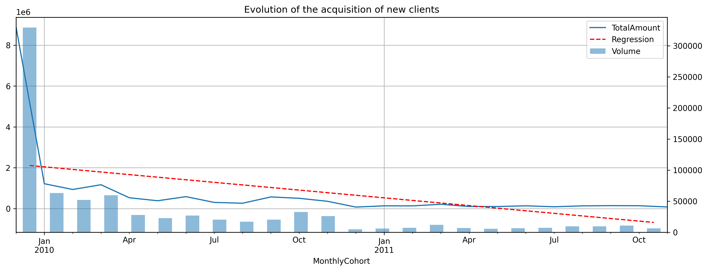
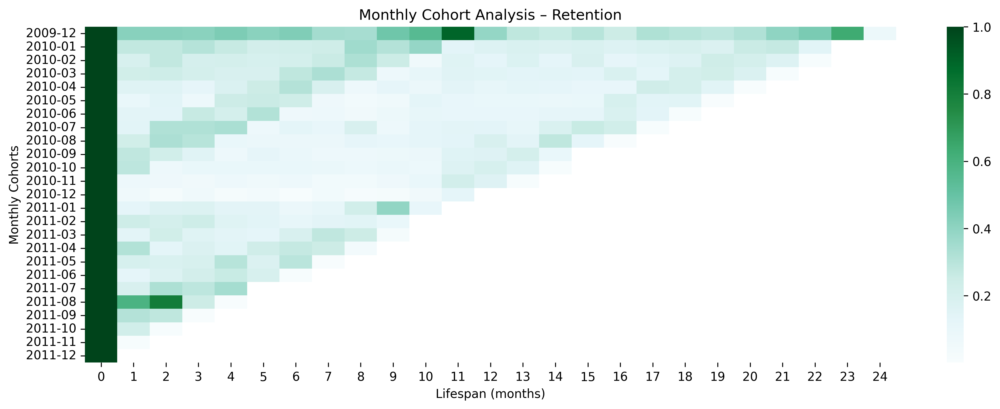
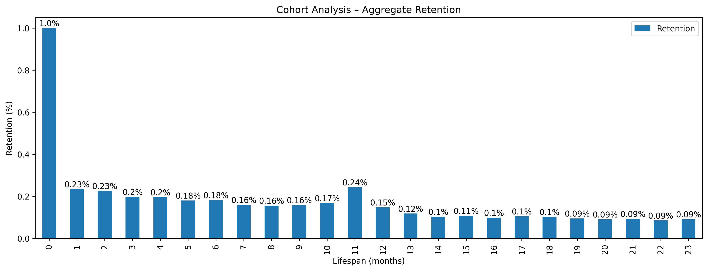
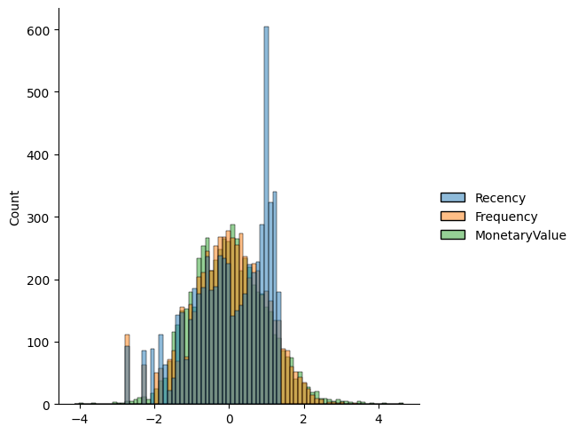

Code
import numpy as np
import pandas as pd
import datetime
import matplotlib.pyplot as plt
import seaborn as snsAntonio Buzzelli
May 30, 2023
Group customers into cohorts and analyze their behaviour over time.
Our dataset is composed by two-year sales data from an online store based in the UK. We first import the data and provide a glimpse of it.
df = pd.read_parquet('../../data/concatenated_online_retail_II.parquet')
df = df.rename(columns={'Customer ID': 'CustomerID'})
df = df.dropna(subset='CustomerID', axis=0)
df['CustomerSince'] = df.groupby('CustomerID')[['InvoiceDate']].transform(min)
df['Lifespan'] = df['InvoiceDate'] - df['CustomerSince']
df['Lifespan_M'] = (df['Lifespan'].dt.days / 30.44).astype(int)
df['MonthlyCohort'] = pd.to_datetime(df['CustomerSince']).dt.to_period('M') #.dt.to_timestamp()
df['Amount'] = df['Price'] * df['Quantity']
# Mapping regions
regions = {'Europe': ['Sweden', 'Denmark', 'Norway', 'Finland', 'Iceland', 'Netherlands', 'Belgium', 'France', 'Germany', 'Switzerland', 'Austria',
'Italy', 'Spain', 'Greece', 'Portugal', 'Malta', 'Cyprus', 'Czech Republic', 'Lithuania', 'Poland', 'United Kingdom', 'EIRE',
'Channel Islands', 'European Community'],
'North America': ['USA', 'Canada'],
'Middle East': ['Bahrain', 'United Arab Emirates', 'Israel', 'Lebanon', 'Saudi Arabia'],
'Asia Pacific': ['Japan', 'Australia', 'Singapore', 'Hong Kong', 'Korea', 'Thailand'],
'RoW': ['Brazil', 'RSA', 'West Indies', 'Nigeria', 'Bermuda'],
'Unspecified': ['Unspecified']}
country_to_region = {}
for region, countries in regions.items():
for country in countries:
country_to_region[country] = region
df['Region'] = df['Country'].map(country_to_region)
df = df[df['Amount'] > 0]
df.head()| Invoice | StockCode | Description | Quantity | InvoiceDate | Price | CustomerID | Country | Year | CustomerSince | Lifespan | Lifespan_M | MonthlyCohort | Amount | Region | |
|---|---|---|---|---|---|---|---|---|---|---|---|---|---|---|---|
| 0 | 489434 | 85048 | 15CM CHRISTMAS GLASS BALL 20 LIGHTS | 12 | 2009-12-01 07:45:00 | 6.95 | 13085.0 | United Kingdom | 1 | 2009-12-01 07:45:00 | 0 days | 0 | 2009-12 | 83.4 | Europe |
| 1 | 489434 | 79323P | PINK CHERRY LIGHTS | 12 | 2009-12-01 07:45:00 | 6.75 | 13085.0 | United Kingdom | 1 | 2009-12-01 07:45:00 | 0 days | 0 | 2009-12 | 81.0 | Europe |
| 2 | 489434 | 79323W | WHITE CHERRY LIGHTS | 12 | 2009-12-01 07:45:00 | 6.75 | 13085.0 | United Kingdom | 1 | 2009-12-01 07:45:00 | 0 days | 0 | 2009-12 | 81.0 | Europe |
| 3 | 489434 | 22041 | RECORD FRAME 7" SINGLE SIZE | 48 | 2009-12-01 07:45:00 | 2.10 | 13085.0 | United Kingdom | 1 | 2009-12-01 07:45:00 | 0 days | 0 | 2009-12 | 100.8 | Europe |
| 4 | 489434 | 21232 | STRAWBERRY CERAMIC TRINKET BOX | 24 | 2009-12-01 07:45:00 | 1.25 | 13085.0 | United Kingdom | 1 | 2009-12-01 07:45:00 | 0 days | 0 | 2009-12 | 30.0 | Europe |
| MonthlyCohort | Lifespan_M | n | TotalRevenue | |
|---|---|---|---|---|
| 0 | 2009-12 | 0 | 32111 | 730976.720 |
| 1 | 2009-12 | 1 | 13433 | 403375.071 |
| 2 | 2009-12 | 2 | 13449 | 353813.642 |
| 3 | 2009-12 | 3 | 13279 | 352853.150 |
| 4 | 2009-12 | 4 | 14197 | 337613.590 |
| ... | ... | ... | ... | ... |
| 314 | 2011-10 | 1 | 2107 | 26349.110 |
| 315 | 2011-10 | 2 | 69 | 737.210 |
| 316 | 2011-11 | 0 | 7014 | 89903.810 |
| 317 | 2011-11 | 1 | 89 | 4225.350 |
| 318 | 2011-12 | 0 | 642 | 23844.090 |
319 rows × 4 columns
Implementing a cohort analysis is useful for a business to evaluate clients’ retention over time. The most common practice is to divide customers according to the period in which they were first acquired (Monthly Cohorts). Based on the available data, we can also divide them by Region.
grouped_life_count = df.groupby('Lifespan_M')[['CustomerID']].count()
grouped_life_count = grouped_life_count.divide(grouped_life_count.iloc[0].item(), axis=0)
grouped_life_count = grouped_life_count.rename(columns={'CustomerID': 'Retention'})
fig, ax = plt.subplots(figsize=(15, 5), dpi=300)
grouped_life_count.plot(kind='bar', ax=ax)
for p in ax.patches:
count = p.get_height().round(2)
x = p.get_x() + p.get_width() / 2
y = p.get_y() + p.get_height() + 0.02
ax.annotate(f'{count}%', (x, y), ha='center', va='center')
plt.title("Cohort Analysis – Aggregate Retention")
plt.ylabel('Retention (%)')
plt.xlabel('Lifespan (months)')
plt.show()
cohorts = grouped_m.reset_index(drop=True).pivot(index='MonthlyCohort', columns='Lifespan_M', values='n')
retention = cohorts.divide(cohorts.iloc[:, 0], axis=0)
plt.figure(figsize=(15, 5), dpi=300)
sns.heatmap(retention, cmap='BuGn')
plt.title("Monthly Cohort Analysis – Retention")
plt.xlabel('Lifespan (months)')
plt.ylabel('Monthly Cohorts')
plt.show()
The same principle could be applied to revenue and average purchase value.
cohorts = grouped_m.reset_index(drop=True).pivot(index='MonthlyCohort', columns='Lifespan_M', values='TotalRevenue')
retention = cohorts.divide(cohorts.iloc[:, 0], axis=0)
plt.figure(figsize=(15, 5), dpi=300)
sns.heatmap(retention, cmap='BuGn')
plt.title("Monthly Cohort Analysis – Total Revenue")
plt.xlabel('Lifespan (months)')
plt.ylabel('Monthly Cohorts')
plt.show()
| Region | Lifespan_M | n | TotalRevenue | |
|---|---|---|---|---|
| 0 | Asia Pacific | 0 | 606 | 17983.78 |
| 1 | Asia Pacific | 1 | 120 | 7324.13 |
| 2 | Asia Pacific | 2 | 54 | 3396.66 |
| 3 | Asia Pacific | 3 | 103 | 5327.51 |
| 4 | Asia Pacific | 4 | 236 | 21895.21 |
| ... | ... | ... | ... | ... |
| 64 | Unspecified | 4 | 41 | 843.55 |
| 65 | Unspecified | 5 | 68 | 2379.88 |
| 66 | Unspecified | 7 | 76 | 1387.50 |
| 67 | Unspecified | 15 | 62 | 1104.73 |
| 68 | Unspecified | 16 | 25 | 463.91 |
69 rows × 4 columns
snapshot_date = df['InvoiceDate'].max() + datetime.timedelta(days=1)
datamart = df.groupby('CustomerID').agg(
Recency=('InvoiceDate', lambda x: (snapshot_date - x.max()).days),
Frequency=('Invoice', 'count'),
MonetaryValue=('Amount', 'sum')
).reset_index()
datamart['R'] = pd.qcut(datamart['Recency'], q=4, labels=range(4, 0, -1))
datamart['F'] = pd.qcut(datamart['Frequency'], q=4, labels=range(1,5))
datamart['M'] = pd.qcut(datamart['MonetaryValue'], q=4, labels=range(1,5))
datamart['RFM_Segment'] = datamart.apply(
lambda row:
str(row['R'].astype(int)) +
str(row['F'].astype(int)) +
str(row['M'].astype(int)),
axis=1)
datamart['RFM_Score'] = datamart[['R', 'F', 'M']].sum(axis=1)
datamart| CustomerID | Recency | Frequency | MonetaryValue | R | F | M | RFM_Segment | RFM_Score | |
|---|---|---|---|---|---|---|---|---|---|
| 0 | 12346.0 | 326 | 34 | 77556.46 | 2 | 2 | 4 | 224 | 8 |
| 1 | 12347.0 | 2 | 253 | 5633.32 | 4 | 4 | 4 | 444 | 12 |
| 2 | 12348.0 | 75 | 51 | 2019.40 | 3 | 2 | 3 | 323 | 8 |
| 3 | 12349.0 | 19 | 175 | 4428.69 | 4 | 4 | 4 | 444 | 12 |
| 4 | 12350.0 | 310 | 17 | 334.40 | 2 | 1 | 1 | 211 | 4 |
| ... | ... | ... | ... | ... | ... | ... | ... | ... | ... |
| 5873 | 18283.0 | 4 | 986 | 2736.65 | 4 | 4 | 4 | 444 | 12 |
| 5874 | 18284.0 | 432 | 28 | 461.68 | 1 | 2 | 2 | 122 | 5 |
| 5875 | 18285.0 | 661 | 12 | 427.00 | 1 | 1 | 2 | 112 | 4 |
| 5876 | 18286.0 | 477 | 67 | 1296.43 | 1 | 3 | 3 | 133 | 7 |
| 5877 | 18287.0 | 43 | 155 | 4182.99 | 3 | 4 | 4 | 344 | 11 |
5878 rows × 9 columns
RFM_Segment
444 628
111 564
344 332
211 290
333 246
233 243
122 241
222 234
433 196
322 184
dtype: int64| n | AvgRecency | AvgFrequency | AvgMonetaryValue | |
|---|---|---|---|---|
| RFM_Score | ||||
| 12 | 628 | 10.4 | 579.9 | 14892.4 |
| 11 | 542 | 35.9 | 275.5 | 5029.5 |
| 10 | 548 | 70.1 | 177.9 | 3139.0 |
| 9 | 563 | 97.7 | 112.7 | 2464.3 |
| 8 | 622 | 147.5 | 74.7 | 1473.1 |
| 7 | 631 | 198.5 | 52.5 | 1119.0 |
| 6 | 603 | 224.8 | 34.2 | 698.9 |
| 5 | 620 | 311.3 | 25.2 | 438.7 |
| 4 | 557 | 377.3 | 17.5 | 255.3 |
| 3 | 564 | 546.6 | 9.8 | 176.4 |
| CustomerID | Recency | Frequency | MonetaryValue | RFM_Score | |
|---|---|---|---|---|---|
| count | 5878.000000 | 5878.000000 | 5878.000000 | 5878.000000 | 5878.000000 |
| mean | 15315.313542 | 201.331916 | 137.044743 | 3018.616737 | 7.498469 |
| std | 1715.572666 | 209.338707 | 353.818629 | 14737.731040 | 2.853030 |
| min | 12346.000000 | 1.000000 | 1.000000 | 2.950000 | 3.000000 |
| 25% | 13833.250000 | 26.000000 | 21.000000 | 348.762500 | 5.000000 |
| 50% | 15314.500000 | 96.000000 | 53.000000 | 898.915000 | 7.000000 |
| 75% | 16797.750000 | 380.000000 | 142.000000 | 2307.090000 | 10.000000 |
| max | 18287.000000 | 739.000000 | 12890.000000 | 608821.650000 | 12.000000 |
cols_data = ['Recency', 'Frequency', 'MonetaryValue']
datamart_rfm = datamart[cols_data].copy()
datamart_log = np.log(datamart_rfm) # log transform
# centering and scaling
from sklearn.preprocessing import StandardScaler
datamart_normalized = StandardScaler().fit_transform(datamart_log)
datamart_normalized_df = pd.DataFrame(datamart_normalized, columns=cols_data).describe().round(2)
display(datamart_normalized_df)
sns.displot(pd.DataFrame(datamart_normalized))| Recency | Frequency | MonetaryValue | |
|---|---|---|---|
| count | 5878.00 | 5878.00 | 5878.00 |
| mean | 0.00 | -0.00 | 0.00 |
| std | 1.00 | 1.00 | 1.00 |
| min | -2.69 | -2.74 | -4.13 |
| 25% | -0.70 | -0.63 | -0.70 |
| 50% | 0.10 | 0.01 | -0.02 |
| 75% | 0.94 | 0.70 | 0.65 |
| max | 1.34 | 3.82 | 4.66 |
